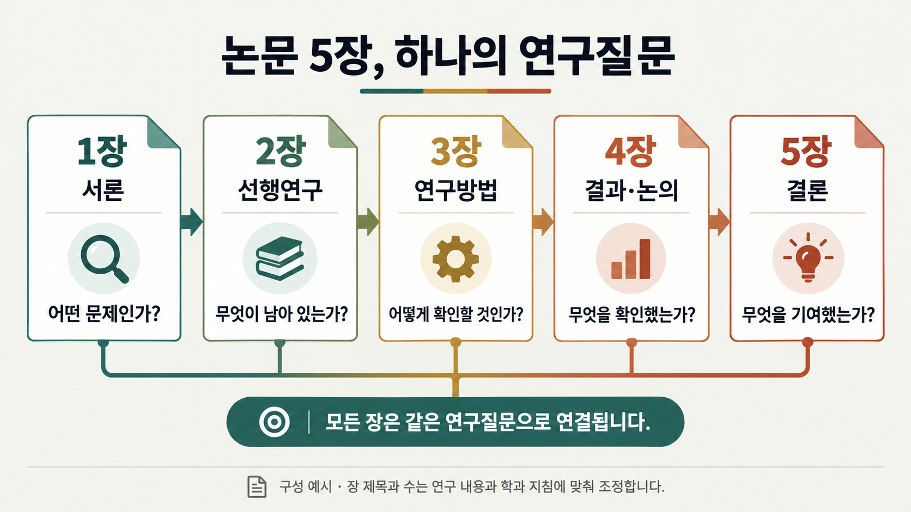
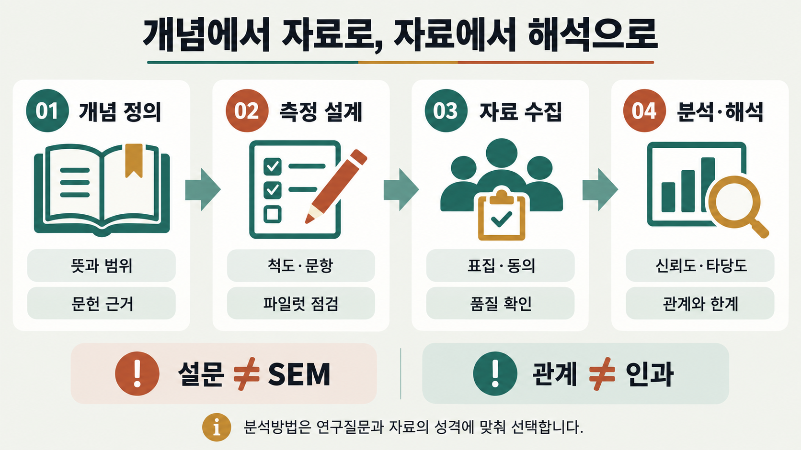

<meta charset="utf-8">
<meta name="description" content="설문조사 및 실증 데이터를 활용한 가설 검증, 측정 모형, 구조방정식(SEM), APA 7 양식 논문 작성 가이드입니다.">
<meta property="og:description" content="설문조사 및 실증 데이터를 활용한 가설 검증, 측정 모형, 구조방정식(SEM), APA 7 양식 논문 작성 가이드입니다.">
<meta name="viewport" content="width=device-width, initial-scale=1">
<link rel="preconnect" href="https://fonts.googleapis.com">
<link rel="preconnect" href="https://fonts.gstatic.com" crossorigin>
<link rel="stylesheet" href="https://fonts.googleapis.com/css2?family=IBM+Plex+Mono:wght@400;500;600&display=swap">
<style>

/* ---- 웹 접근성 및 편의 기능 추가 스타일 ---- */
.skip-link{position:absolute;top:-50px;left:16px;background:var(--ink);color:var(--paper);padding:8px 16px;z-index:999;border-radius:var(--radius-sm);font-size:13px;font-weight:600;text-decoration:none;transition:top .2s ease;}
.skip-link:focus{top:12px;outline:3px solid var(--accent);outline-offset:2px;}

/* 네비게이션 컨테이너 및 도구 모음 */
.nav-wrap{display:flex;align-items:center;justify-content:space-between;max-width:var(--maxw);margin-inline:auto;}
.nav-actions{display:flex;align-items:center;gap:8px;margin-left:12px;flex-shrink:0;}
.theme-toggle-btn,.action-btn{display:inline-flex;align-items:center;justify-content:center;gap:5px;padding:6px 11px;font-size:12px;font-weight:600;border:1px solid var(--line);border-radius:999px;background:var(--paper-raised);color:var(--ink-soft);cursor:pointer;transition:all .15s;font-family:var(--font-body);user-select:none;}
.theme-toggle-btn:hover,.action-btn:hover{background:var(--paper-sunken);color:var(--ink);border-color:var(--ink-faint);}
.theme-toggle-btn:focus-visible,.action-btn:focus-visible{outline:2px solid var(--accent-ink);outline-offset:2px;}

/* 복사 버튼 UI */
.copy-wrap{position:relative;}
.copy-btn{position:absolute;top:10px;right:10px;font-size:11px;font-weight:600;padding:4px 9px;border:1px solid var(--line);border-radius:var(--radius-sm);background:var(--paper-raised);color:var(--ink-soft);cursor:pointer;transition:all .15s;z-index:2;}
.copy-btn:hover{background:var(--paper-sunken);color:var(--ink);}
.copy-btn.copied{background:var(--accent-soft);color:var(--accent-ink);border-color:var(--accent);}

/* 모바일 네비게이션 페이드 힌트 */
.nav-scroll-container{position:relative;flex:1;min-width:0;overflow:hidden;}
.nav-scroll-container::after{content:'';position:absolute;top:0;right:0;bottom:0;width:24px;pointer-events:none;background:linear-gradient(to right,transparent,var(--paper));opacity:.9;}


  :root{
    --paper:#FFFFFF; --paper-raised:#FFFFFF; --paper-sunken:#F7F6F3;
    --ink:#37352F; --ink-soft:#5F5E5A; --ink-faint:#6F6E69;
    --line:#E9E9E7;
    --accent:#2383E2; --accent-ink:#0B6BCB; --accent-soft:#E7F3F8;
    --track-a:#2383E2; --track-a-soft:#E7F3F8; --track-a-ink:#0B6BCB;
    --track-b:#E03E3E; --track-b-soft:#FBE4E4; --track-b-ink:#A32A3F;
    --radius:6px; --radius-sm:4px;
    --shadow:0 1px 2px rgba(15,15,15,.05), 0 10px 28px -16px rgba(15,15,15,.12);
    --font-display:'Pretendard','Apple SD Gothic Neo','Malgun Gothic',sans-serif;
    --font-body:'Pretendard','Apple SD Gothic Neo','Malgun Gothic',-apple-system,sans-serif;
    --font-mono:'IBM Plex Mono',ui-monospace,'SFMono-Regular',Menlo,monospace;
    --maxw:920px;
  }
  @media (prefers-color-scheme: dark){
    :root:not([data-theme="light"]){
      --paper:#191919; --paper-raised:#252525; --paper-sunken:#141414;
      --ink:#D4D4D4; --ink-soft:#B4B3B0; --ink-faint:#9B9A97;
      --line:#373737;
      --accent:#529CCA; --accent-ink:#8CC2E6; --accent-soft:#1C3243;
      --track-a:#529CCA; --track-a-soft:#1C3243; --track-a-ink:#8CC2E6;
      --track-b:#FF7369; --track-b-soft:#3B2222; --track-b-ink:#FF9A94;
      --shadow:0 1px 2px rgba(0,0,0,.4), 0 10px 28px -16px rgba(0,0,0,.6);
    }
  }
  :root[data-theme="dark"]{
    --paper:#191919; --paper-raised:#252525; --paper-sunken:#141414;
    --ink:#D4D4D4; --ink-soft:#B4B3B0; --ink-faint:#9B9A97;
    --line:#373737;
    --accent:#529CCA; --accent-ink:#8CC2E6; --accent-soft:#1C3243;
    --track-a:#529CCA; --track-a-soft:#1C3243; --track-a-ink:#8CC2E6;
    --track-b:#FF7369; --track-b-soft:#3B2222; --track-b-ink:#FF9A94;
    --shadow:0 1px 2px rgba(0,0,0,.4), 0 10px 28px -16px rgba(0,0,0,.6);
  }

  *{box-sizing:border-box;}
  body{background:var(--paper); color:var(--ink); font-family:var(--font-body); line-height:1.7; padding-inline:16px; -webkit-font-smoothing:antialiased;}
  h1,h2,h3{font-family:var(--font-display); font-weight:700; text-wrap:balance; margin:0;}
  p{margin:0;}
  ul,ol{margin:0; padding:0; list-style:none;}
  a{color:inherit;}
  .mono{font-family:var(--font-mono);}

  .wrap{max-width:var(--maxw); margin-inline:auto;}

  /* ---- nav ---- */
  .nav{position:sticky; top:env(safe-area-inset-top,0px); z-index:20; background:color-mix(in srgb, var(--paper) 88%, transparent); backdrop-filter:blur(8px); border-bottom:1px solid var(--line); margin-inline:-16px; padding-inline:16px;}
  .nav-inner{max-width:var(--maxw); margin-inline:auto; display:flex; gap:6px; overflow-x:auto; padding-block:10px; scrollbar-width:none;}
  .nav-inner::-webkit-scrollbar{display:none;}
  .nav a{flex:none; font-size:13px; font-weight:600; padding:7px 13px; border-radius:999px; color:var(--ink-soft); white-space:nowrap; text-decoration:none; transition:background .15s,color .15s;}
  .nav a:hover{background:var(--paper-sunken); color:var(--ink);}
  .nav a.active{background:var(--ink); color:var(--paper);}

  section{padding-block:56px; border-bottom:1px solid var(--line);}
  section:last-of-type{border-bottom:none;}
  .eyebrow{font-family:var(--font-mono); font-size:12px; letter-spacing:.09em; text-transform:uppercase; color:var(--accent-ink); background:var(--accent-soft); display:inline-block; padding:4px 10px; border-radius:999px; margin-bottom:14px;}
  h2{font-size:clamp(22px,3.6vw,30px); margin-bottom:8px;}
  .section-lede{color:var(--ink-soft); font-size:15px; max-width:64ch; margin-top:10px;}
  .purpose-strip{margin-top:16px; font-family:var(--font-display); font-style:normal; font-size:14.5px; color:var(--ink-soft); border-left:3px solid var(--accent); padding-left:12px; max-width:62ch;}
  .purpose-strip b{color:var(--ink); font-style:normal;}

  /* ---- hero ---- */
  .hero{padding-block:52px 44px; border-bottom:1px solid var(--line);}
  .hero h1{font-size:clamp(32px,6vw,48px); line-height:1.25;}
  .hero .lede{margin-top:16px; font-size:17px; color:var(--ink-soft); max-width:64ch;}
  .hero .badges{display:flex; flex-wrap:wrap; gap:8px; margin-top:22px;}
  .pill{font-size:12.5px; font-weight:600; padding:6px 12px; border-radius:999px; border:1px solid var(--line); color:var(--ink-soft); font-family:var(--font-mono);}
  .disclaimer{margin-top:28px; display:flex; gap:10px; align-items:flex-start; background:var(--paper-sunken); border:1px solid var(--line); border-radius:var(--radius-sm); padding:14px 16px; font-size:13.5px; color:var(--ink-soft);}
  .disclaimer .mark{font-size:16px; line-height:1;}

  /* ---- degree compare ---- */
  .degree-compare{margin-top:32px; border:1px solid var(--line); border-radius:var(--radius); background:var(--paper-raised); box-shadow:var(--shadow); overflow:hidden;}
  .degree-compare .dc-head{padding:18px 22px 4px;}
  .degree-compare .dc-head h3{font-family:var(--font-body); font-size:17px; font-weight:700;}
  .degree-compare .dc-head p{font-size:13.5px; color:var(--ink-soft); margin-top:6px;}
  .dc-row{display:grid; grid-template-columns:1fr 1fr 1fr; border-top:1px solid var(--line); font-size:13.5px;}
  .dc-row:first-of-type{border-top:1px solid var(--line); margin-top:14px;}
  .dc-row.head{background:var(--paper-sunken); font-weight:700; font-size:11.5px; text-transform:uppercase; letter-spacing:.03em; color:var(--ink-faint);}
  .dc-row > div{padding:12px 16px;}
  .dc-row > div:not(:first-child){border-left:1px solid var(--line);}
  .dc-row > div:first-child{font-weight:600; color:var(--ink-faint); font-size:12.5px;}
  @media (max-width:640px){
    .dc-row{grid-template-columns:1fr;}
    .dc-row > div:not(:first-child){border-left:none; border-top:1px dashed var(--line);}
    .dc-row > div:first-child{padding-bottom:4px;}
  }
  .degree-compare .dc-note{padding:14px 22px 20px; font-size:12.5px; color:var(--ink-faint); border-top:1px dashed var(--line); margin-top:4px;}

  /* ---- meaning cards ---- */
  .grid3{display:grid; grid-template-columns:repeat(3,1fr); gap:16px; margin-top:28px;}
  @media (max-width:720px){.grid3{grid-template-columns:1fr;}}
  .card{background:var(--paper-raised); border:1px solid var(--line); border-radius:var(--radius); padding:20px; box-shadow:var(--shadow);}
  .card .num{font-family:var(--font-mono); color:var(--accent-ink); font-size:13px; font-weight:600;}
  .card h3{font-size:17px; margin-top:8px; margin-bottom:8px; font-family:var(--font-body); font-weight:700;}
  .card p{font-size:14px; color:var(--ink-soft);}

  /* ---- purpose -> method table ---- */
  .pm-table{margin-top:26px; border:1px solid var(--line); border-radius:var(--radius); overflow:hidden; background:var(--paper-raised);}
  .pm-row{display:grid; grid-template-columns:1.4fr 1fr; border-top:1px solid var(--line); font-size:13.5px;}
  .pm-row:first-child{border-top:none; background:var(--paper-sunken); font-weight:700; font-size:12px; text-transform:uppercase; letter-spacing:.03em; color:var(--ink-faint);}
  .pm-row > div{padding:12px 14px;}
  .pm-row > div:last-child{border-left:1px solid var(--line); font-weight:600;}
  @media (max-width:640px){
    .pm-row{grid-template-columns:1fr;}
    .pm-row > div:last-child{border-left:none; border-top:1px dashed var(--line);}
  }

  /* ---- method cards ---- */
  .tracks{display:grid; grid-template-columns:1fr 1fr; gap:18px; margin-top:24px;}
  @media (max-width:720px){.tracks{grid-template-columns:1fr;}}
  .track-card{border-radius:var(--radius); padding:22px; border:1px solid var(--line); background:var(--paper-raised); box-shadow:var(--shadow);}
  .track-card.a{border-top:4px solid var(--track-a);}
  .track-card.b{border-top:4px solid var(--track-b);}
  .track-tag{font-family:var(--font-mono); font-size:11.5px; font-weight:700; letter-spacing:.02em; padding:3px 9px; border-radius:6px; display:inline-block;}
  .track-card.a .track-tag{background:var(--track-a-soft); color:var(--track-a-ink);}
  .track-card.b .track-tag{background:var(--track-b-soft); color:var(--track-b-ink);}
  .track-card h3{font-family:var(--font-body); font-size:19px; margin-top:12px;}
  .track-card .desc{font-size:14px; color:var(--ink-soft); margin-top:6px;}
  .track-card dl{margin-top:16px; display:grid; gap:10px;}
  .track-card dt{font-size:12px; font-weight:600; color:var(--ink-faint); text-transform:uppercase; letter-spacing:.04em;}
  .track-card dd{font-size:14px; margin:2px 0 0 0;}

  /* ---- roadmap ---- */
  .roadmap{position:relative; display:grid; grid-template-columns:repeat(4,1fr); gap:18px; margin-top:40px;}
  .roadmap::before{content:"";position:absolute; top:25px; left:44px; right:44px; height:2px; background:repeating-linear-gradient(90deg,var(--line) 0 6px, transparent 6px 12px); z-index:0;}
  .roadmap li{position:relative; z-index:1; display:flex; flex-direction:column; align-items:center; text-align:center; gap:10px;}
  .roadmap .badge{width:50px;height:50px;border-radius:50%; background:var(--paper-raised); border:2px solid var(--ink); display:flex;align-items:center;justify-content:center; font-family:var(--font-mono); font-weight:600; font-size:13px; flex:none;}
  .roadmap .stage-title{font-weight:700; font-size:14.5px;}
  .roadmap .stage-desc{font-size:12.5px; color:var(--ink-soft);}
  @media (max-width:720px){
    .roadmap{grid-template-columns:1fr; gap:26px;}
    .roadmap::before{top:0; bottom:0; left:24px; right:auto; width:2px; height:auto; background:repeating-linear-gradient(180deg,var(--line) 0 6px, transparent 6px 12px);}
    .roadmap li{flex-direction:row; align-items:flex-start; text-align:left; gap:16px;}
    .roadmap .badge{width:48px;height:48px;}
  }
  .roadmap-note{margin-top:22px; font-size:13px; color:var(--ink-faint); border-left:3px solid var(--accent); padding-left:12px;}

  /* ---- status callout ---- */
  .status-now{margin-top:26px; background:var(--accent-soft); border:1px solid var(--accent); border-radius:var(--radius-sm); padding:14px 16px; font-size:13.5px; color:var(--accent-ink); display:flex; gap:10px; align-items:flex-start;}
  .status-now .mark{font-size:15px; line-height:1.4; flex:none;}

  /* ---- sub headings inside a section ---- */
  .sub-h{font-family:var(--font-body); font-size:17px; font-weight:700; margin-top:38px;}
  .sub-lede{margin-top:6px;}

  /* ---- pipeline (8 stage) strip ---- */
  .pipeline-strip{display:flex; gap:10px; overflow-x:auto; margin-top:20px; padding-bottom:8px; scrollbar-width:thin;}
  .pipeline-step{flex:none; width:136px; background:var(--paper-raised); border:1px solid var(--line); border-radius:var(--radius-sm); padding:12px 14px; box-shadow:var(--shadow);}
  .pipeline-step em{display:block; font-family:var(--font-mono); font-size:10.5px; color:var(--accent-ink); font-style:normal; margin-bottom:6px;}
  .pipeline-step b{display:block; font-size:14px; margin-bottom:4px;}
  .pipeline-step span{font-size:12px; color:var(--ink-soft);}

  /* ---- M-code phase columns ---- */
  .phase-cols{display:grid; grid-template-columns:repeat(5,1fr); gap:12px; margin-top:20px;}
  @media (max-width:900px){.phase-cols{grid-template-columns:1fr 1fr;}}
  @media (max-width:520px){.phase-cols{grid-template-columns:1fr;}}
  .phase-col{border:1px solid var(--line); border-radius:var(--radius-sm); background:var(--paper-raised); padding:12px 12px 14px;}
  .phase-col h5{font-family:var(--font-mono); font-size:10.5px; text-transform:uppercase; letter-spacing:.03em; color:var(--ink-faint); margin-bottom:8px; font-weight:700;}
  .phase-col ul{display:grid; gap:6px;}
  .phase-col li{font-size:12.5px; line-height:1.5; color:var(--ink-soft);}
  .phase-col li b{font-family:var(--font-mono); color:var(--accent-ink); font-size:11.5px; margin-right:4px; font-weight:700;}

  /* ---- decision gate grid ---- */
  .gate-grid{display:grid; grid-template-columns:repeat(3,1fr); gap:10px; margin-top:20px;}
  @media (max-width:720px){.gate-grid{grid-template-columns:1fr 1fr;}}
  @media (max-width:480px){.gate-grid{grid-template-columns:1fr;}}
  .gate-chip{border:1px solid var(--line); border-radius:var(--radius-sm); background:var(--paper-raised); padding:10px 12px;}
  .gate-chip b{display:block; font-family:var(--font-mono); font-size:12px; color:var(--ink); margin-bottom:3px;}
  .gate-chip span{font-size:12px; color:var(--ink-soft);}

  /* ---- gantt board (원본 논문가이드 플랫폼 워크스트림 보드 재현) ---- */
  .gb-intro{display:grid; grid-template-columns:repeat(4,1fr); gap:1px; margin-top:20px; border:1px solid var(--line); background:var(--line);}
  @media (max-width:760px){.gb-intro{grid-template-columns:1fr 1fr;}}
  .gb-intro article{padding:10px 12px; background:var(--paper-sunken);}
  .gb-intro b{display:block; color:var(--ink); font-size:11px;}
  .gb-intro span{display:block; margin-top:4px; color:var(--ink-soft); font-size:10.5px; line-height:1.5;}

  .gb-legend{display:flex; flex-wrap:wrap; gap:6px; margin-top:14px;}
  .gb-legend span{padding:4px 9px; border:1px solid var(--line); font-size:11px; font-weight:700; border-radius:4px;}
  .gb-legend .critical{background:var(--ink); color:var(--paper); border-color:var(--ink);}
  .gb-legend .support{background:var(--paper-sunken); color:var(--ink);}
  .gb-legend .branch{background:var(--paper-raised); color:var(--ink); border:1px dashed var(--ink);}
  .gb-legend .approval{background:var(--paper-raised); color:var(--ink); border:2px solid var(--ink); padding:3px 8px;}

  .gb-scroll{margin-top:14px; overflow-x:auto; border:1px solid var(--line); background:var(--paper-raised); border-radius:var(--radius-sm);}
  .gb-board{min-width:1040px;}
  .gb-groups,.gb-head,.gb-row{display:grid; grid-template-columns:190px repeat(16,minmax(52px,1fr));}
  .gb-groups{border-bottom:1px solid var(--line); background:var(--ink); color:var(--paper);}
  .gb-groups b{grid-column:1; padding:8px 10px; border-right:1px solid color-mix(in srgb, var(--paper) 25%, transparent); font-size:10px;}
  .gb-groups span{padding:8px 5px; border-right:1px solid color-mix(in srgb, var(--paper) 25%, transparent); text-align:center; font-size:9.5px; font-weight:800; letter-spacing:.03em;}
  .gb-groups span:last-child{border-right:0;}
  .gb-head{border-bottom:1px solid var(--line); background:var(--paper-sunken);}
  .gb-head b,.gb-head span{padding:7px 4px; border-right:1px solid var(--line); color:var(--ink-soft); font-size:9.5px; text-align:center; line-height:1.3;}
  .gb-head b{padding-left:10px; color:var(--ink); text-align:left; font-weight:700;}
  .gb-head span:last-child{border-right:0;}
  .gb-row{position:relative; min-height:44px; border-bottom:1px solid var(--line); isolation:isolate;}
  .gb-row:last-child{border-bottom:0;}
  .gb-row:after{content:""; position:absolute; z-index:-1; left:190px; right:0; top:0; bottom:0; background:repeating-linear-gradient(to right, transparent 0 calc(100% / 16 - 1px), var(--paper-sunken) calc(100% / 16 - 1px) calc(100% / 16));}
  .gb-row.phase-break{border-top:3px solid var(--line);}
  .gb-label{grid-column:1; grid-row:1; padding:7px 9px; border-right:1px solid var(--line); background:var(--paper-raised);}
  .gb-label b{display:block; color:var(--ink); font-size:10.5px;}
  .gb-label span{display:block; margin-top:2px; color:var(--ink-faint); font-size:9px;}
  .gb-bar{grid-row:1; align-self:center; z-index:2; min-height:26px; margin:4px 3px; padding:5px 7px; background:var(--paper-sunken); border-left:3px solid var(--ink); color:var(--ink); font-size:9.5px; font-weight:700; line-height:1.35; overflow:hidden; border-radius:2px;}
  .gb-bar.critical{background:var(--ink); color:var(--paper);}
  .gb-bar.branch{background:var(--paper-raised); border:1px dashed var(--ink);}
  .gb-bar.approval{background:var(--paper-raised); border:2px solid var(--ink); padding:4px 6px;}
  .gb-bar.milestone{justify-self:center; min-width:40px; text-align:center; background:var(--ink); color:var(--paper); border:0; border-radius:3px;}

  .gb-note{display:grid; grid-template-columns:120px 1fr; margin-top:14px; border:1px solid var(--accent);}
  @media (max-width:640px){.gb-note{grid-template-columns:1fr;}}
  .gb-note b{display:grid; place-items:center; padding:10px; background:var(--accent-ink); color:var(--paper); font-size:10.5px; text-align:center;}
  .gb-note p{margin:0; padding:10px 12px; background:var(--accent-soft); color:var(--accent-ink); font-size:11.5px; line-height:1.6;}

  a.mono{color:var(--accent-ink); text-decoration:none; border-bottom:1px solid color-mix(in srgb, var(--accent-ink) 35%, transparent);}
  a.mono:hover{border-bottom-color:var(--accent-ink);}
  a.mono:focus-visible{outline:2px solid var(--accent-ink); outline-offset:2px; border-radius:2px;}
  /* ---- 도식 블록 ---- */
  .dg{margin:26px 0; border:1px solid var(--line); border-radius:var(--radius); background:var(--paper-raised); box-shadow:var(--shadow); overflow:hidden;}
  .dg-head{padding:16px 20px 14px; border-bottom:1px solid var(--line);}
  .dg-head h3{font-family:var(--font-body); font-size:15.5px; font-weight:700;}
  .dg-head p{font-size:12.5px; line-height:1.7; color:var(--ink-soft); margin-top:5px;}
  .dg-body{padding:16px 20px 18px;}
  .dg-flow{display:grid; gap:10px;}
  .dg-flow.c2{grid-template-columns:repeat(2,1fr);}
  .dg-flow.c3{grid-template-columns:repeat(3,1fr);}
  .dg-flow.c4{grid-template-columns:repeat(4,1fr);}
  .dg-flow.c5{grid-template-columns:repeat(5,1fr);}
  .dg-step{position:relative; background:var(--paper-sunken); border-radius:var(--radius-sm); padding:12px 13px 13px;}
  .dg-flow > .dg-step + .dg-step::before{content:""; position:absolute; left:-13px; top:50%; transform:translateY(-50%); border-left:6px solid var(--ink-faint); border-top:5px solid transparent; border-bottom:5px solid transparent;}
  .dg-n{display:inline-block; min-width:18px; height:18px; line-height:18px; text-align:center; padding:0 4px; border-radius:5px; background:var(--accent-soft); color:var(--accent-ink); font-family:var(--font-mono); font-size:11px; font-weight:700; margin-bottom:7px;}
  .dg-flow.neutral .dg-n{background:var(--ink); color:var(--paper);}
  .dg-step h4{font-family:var(--font-body); font-size:13.5px; font-weight:700; margin-bottom:5px;}
  .dg-step p{font-size:12.5px; line-height:1.65; color:var(--ink-soft);}
  .dg-back{position:relative; margin-top:10px; padding:9px 14px 9px 32px; border:1px dashed var(--line); border-radius:var(--radius-sm); font-size:12.5px; color:var(--ink-faint); background:var(--paper-sunken);}
  .dg-back::before{content:""; position:absolute; left:14px; top:50%; transform:translateY(-50%); border-right:6px solid var(--ink-faint); border-top:5px solid transparent; border-bottom:5px solid transparent;}
  .dg-note{margin-top:10px; padding:10px 13px; border-radius:var(--radius-sm); background:var(--track-b-soft); color:var(--track-b-ink); font-size:12.5px; line-height:1.7;}
  .dg-trunk{position:relative; background:var(--ink); color:var(--paper); border-radius:var(--radius-sm); padding:12px 14px; margin-bottom:17px;}
  .dg-trunk h4{font-family:var(--font-body); font-size:13.5px; font-weight:700; margin-bottom:4px;}
  .dg-trunk p{font-size:12.5px; line-height:1.65; opacity:.82;}
  .dg-trunk::after{content:""; position:absolute; left:50%; bottom:-11px; transform:translateX(-50%); border-top:6px solid var(--ink); border-left:5px solid transparent; border-right:5px solid transparent;}
  .dg-flow.nb > .dg-step + .dg-step::before{display:none;}
  .dg-step.ta{background:var(--track-a-soft);}
  .dg-step.ta h4{color:var(--track-a-ink);}
  .dg-step.tb{background:var(--track-b-soft);}
  .dg-step.tb h4{color:var(--track-b-ink);}
  .dg-step.ta p,.dg-step.tb p{color:var(--ink);}
  .dg-join{position:relative; margin-top:17px; background:var(--paper-sunken); border:1px solid var(--line); border-radius:var(--radius-sm); padding:12px 14px;}
  .dg-join::before{content:""; position:absolute; left:50%; top:-11px; transform:translateX(-50%); border-top:6px solid var(--ink-faint); border-left:5px solid transparent; border-right:5px solid transparent;}
  .dg-join h4{font-family:var(--font-body); font-size:13.5px; font-weight:700; margin-bottom:4px;}
  .dg-join p{font-size:12.5px; line-height:1.65; color:var(--ink-soft);}
  .dg-slide{margin-top:12px; border-top:1px dashed var(--line); padding-top:10px;}
  .dg-slide summary{cursor:pointer; font-size:12px; color:var(--ink-faint); list-style:none; user-select:none;}
  .dg-slide summary::-webkit-details-marker{display:none;}
  .dg-slide summary::before{content:""; display:inline-block; vertical-align:middle; margin-right:7px; border-left:5px solid var(--ink-faint); border-top:4px solid transparent; border-bottom:4px solid transparent;}
  .dg-slide[open] summary::before{border-left:4px solid transparent; border-right:4px solid transparent; border-top:5px solid var(--ink-faint); border-bottom:none; margin-right:5px;}
  .dg-slide summary:focus-visible{outline:2px solid var(--accent-ink); outline-offset:2px; border-radius:3px;}
  .dg-slide img{width:100%; height:auto; margin-top:10px; border:1px solid var(--line); border-radius:var(--radius-sm); display:block;}
  .dg-src{padding:10px 20px 13px; border-top:1px dashed var(--line); font-size:11.5px; line-height:1.75; color:var(--ink-faint);}
  .dg-foot{margin-top:10px; padding:9px 13px; border-radius:var(--radius-sm); background:var(--paper-sunken); font-size:12.5px; line-height:1.7; color:var(--ink-soft);}
  @media (max-width:760px){
    .dg-flow.c2,.dg-flow.c3,.dg-flow.c4,.dg-flow.c5{grid-template-columns:1fr;}
    .dg-flow > .dg-step + .dg-step::before{left:50%; top:-13px; transform:translateX(-50%); border-left:5px solid transparent; border-right:5px solid transparent; border-top:6px solid var(--ink-faint); border-bottom:none;}
  }

  /* ---- structure chapters ---- */
  .chapters{display:grid; grid-template-columns:1fr 1fr; gap:18px; margin-top:28px;}
  @media (max-width:720px){.chapters{grid-template-columns:1fr;}}
  .chapter-list{border:1px solid var(--line); border-radius:var(--radius); background:var(--paper-raised); box-shadow:var(--shadow); overflow:hidden;}
  .chapter-list .head{padding:14px 18px; font-weight:700; font-family:var(--font-mono); font-size:13px;}
  .chapter-list.a .head{background:var(--track-a-soft); color:var(--track-a-ink);}
  .chapter-list.b .head{background:var(--track-b-soft); color:var(--track-b-ink);}
  .chapter-list li{display:flex; gap:12px; padding:12px 18px; border-top:1px solid var(--line); font-size:14px; align-items:baseline;}
  .chapter-list li .n{font-family:var(--font-mono); color:var(--ink-faint); font-size:13px; flex:none; width:1.4em;}

  /* ---- topic method ---- */
  .mcm{display:grid; grid-template-columns:repeat(3,1fr); gap:16px; margin-top:28px;}
  @media (max-width:720px){.mcm{grid-template-columns:1fr;}}
  .mcm .card h3{font-family:var(--font-mono); font-size:14px; letter-spacing:.02em;}
  .template-card{margin-top:24px; background:var(--accent-soft); border:1px solid var(--accent); border-radius:var(--radius); padding:22px 24px; position:relative;}
  .template-card .tag{position:absolute; top:-11px; left:20px; background:var(--accent-ink); color:var(--paper); font-family:var(--font-mono); font-size:11px; font-weight:700; padding:3px 10px; border-radius:6px;}
  .template-card p{font-family:var(--font-display); font-size:16.5px; line-height:1.9; color:var(--accent-ink);}

  /* ---- checklist ---- */
  .checklist{margin-top:24px; display:grid; gap:10px;}
  .check-item{display:flex; gap:12px; align-items:flex-start; background:var(--paper-raised); border:1px solid var(--line); border-radius:var(--radius-sm); padding:12px 14px; font-size:14px;}
  .check-item input{margin-top:3px; width:16px; height:16px; accent-color:var(--track-a); flex:none;}
  .check-item label{cursor:pointer;}

  .mistakes{margin-top:16px; display:grid; gap:12px;}
  .mistake{display:flex; gap:14px; padding:14px 0; border-top:1px solid var(--line);}
  .mistake:first-child{border-top:none;}
  .mistake .idx{font-family:var(--font-mono); font-weight:700; color:var(--track-b-ink); flex:none; width:1.6em;}
  .mistake .body h4{font-size:14.5px; font-weight:700; margin-bottom:3px;}
  .mistake .body p{font-size:13.5px; color:var(--ink-soft);}

  /* ---- more ---- */
  .more-grid{display:grid; grid-template-columns:1fr 1fr; gap:16px; margin-top:26px;}
  @media (max-width:720px){.more-grid{grid-template-columns:1fr;}}
  .more-card{border:1px solid var(--line); border-radius:var(--radius); padding:18px 20px; background:var(--paper-raised);}
  .more-card h4{font-size:14px; font-weight:700; font-family:var(--font-mono); margin-bottom:8px;}
  .more-card p{font-size:13.5px; color:var(--ink-soft);}
  .more-card .path{display:block; margin-top:10px; font-family:var(--font-mono); font-size:12.5px; background:var(--paper-sunken); padding:6px 9px; border-radius:6px; word-break:break-all;}

  /* ---- resources ---- */
  .res-groups{display:grid; grid-template-columns:1fr; gap:20px; margin-top:26px;}
  .res-group{border:1px solid var(--line); border-radius:var(--radius); background:var(--paper-raised); padding:18px 20px; box-shadow:var(--shadow);}
  .res-group.a{border-left:4px solid var(--track-a);}
  .res-group.b{border-left:4px solid var(--track-b);}
  .res-group h4{font-family:var(--font-mono); font-size:12.5px; text-transform:uppercase; letter-spacing:.04em; margin-bottom:14px; color:var(--ink-faint);}
  .res-list{display:grid; gap:11px;}
  .res-item{display:flex; flex-wrap:wrap; align-items:baseline; gap:8px; font-size:14px;}
  .res-item a{font-weight:700; color:var(--accent-ink); text-decoration:none; border-bottom:1px solid var(--accent);}
  .res-item a:hover{opacity:.75;}
  .res-cat{font-family:var(--font-mono); font-size:10.5px; text-transform:uppercase; letter-spacing:.03em; color:var(--ink-faint); background:var(--paper-sunken); padding:2px 7px; border-radius:5px; flex:none;}
  .res-note{color:var(--ink-soft); font-size:13px;}

  footer{padding-block:36px calc(36px + env(safe-area-inset-bottom,0px)); font-size:12.5px; color:var(--ink-faint);}
  footer .wrap{display:flex; flex-direction:column; gap:6px;}

  /* ---- data table (장별 분량 등 표 데이터) ---- */
  .data-table{margin-top:20px; width:100%; border-collapse:collapse; font-size:13.5px; background:var(--paper-raised); border:1px solid var(--line); border-radius:var(--radius); overflow:hidden;}
  .data-table thead th{background:var(--paper-sunken); color:var(--ink-faint); font-family:var(--font-mono); font-size:11px; text-transform:uppercase; letter-spacing:.03em; font-weight:700; text-align:left; padding:10px 12px; border-bottom:1px solid var(--line);}
  .data-table td{padding:10px 12px; border-top:1px solid var(--line); vertical-align:top;}
  .data-table tbody tr:first-child td{border-top:none;}
  .data-table td:first-child{font-weight:700; white-space:nowrap;}
  .table-scroll{overflow-x:auto; border-radius:var(--radius);}
  .table-scroll .data-table{border-radius:0; min-width:520px;}

  /* ---- ratio bar (장별 분량 비율 시각화) ---- */
  .ratio-bar{display:flex; height:38px; border-radius:8px; overflow:hidden; margin-top:22px; border:1px solid var(--line);}
  .ratio-bar span{display:flex; align-items:center; justify-content:center; font-family:var(--font-mono); font-size:11px; font-weight:700; overflow:hidden; white-space:nowrap; border-right:1px solid var(--paper);}
  .ratio-bar span:last-child{border-right:none;}
  .ratio-legend{display:flex; flex-wrap:wrap; gap:10px 16px; margin-top:12px;}
  .ratio-legend div{display:flex; align-items:center; gap:6px; font-size:12px; color:var(--ink-soft);}
  .ratio-legend i{display:inline-block; width:10px; height:10px; border-radius:2px; flex:none;}

  /* ---- benchmarking case cards ---- */
  .case-grid{display:grid; grid-template-columns:1fr; gap:14px; margin-top:22px;}
  .case-card{border:1px solid var(--line); border-radius:var(--radius); background:var(--paper-raised); padding:18px 20px; box-shadow:var(--shadow);}
  .case-card .who{font-family:var(--font-mono); font-size:11.5px; color:var(--accent-ink); background:var(--accent-soft); display:inline-block; padding:3px 9px; border-radius:999px; font-weight:700;}
  .case-card h4{font-size:16px; margin-top:10px; font-family:var(--font-body); font-weight:700;}
  .case-card p{font-size:13.5px; color:var(--ink-soft); margin-top:6px;}

  /* ---- cross-guide nav pills (hub <-> track guides) ---- */
  .guide-links{display:flex; flex-wrap:wrap; gap:8px; margin-top:20px;}
  .guide-links a{font-size:12.5px; font-weight:600; padding:7px 14px; border-radius:999px; border:1px solid var(--line); color:var(--ink-soft); text-decoration:none; transition:background .15s,color .15s;}
  .guide-links a:hover{background:var(--paper-sunken); color:var(--ink);}
  .guide-links a.self{background:var(--ink); color:var(--paper); border-color:var(--ink);}

  /* ---- hub: track-guide CTA cards ---- */
  .guide-cta-grid{display:grid; grid-template-columns:1fr 1fr; gap:18px; margin-top:28px;}
  @media (max-width:720px){.guide-cta-grid{grid-template-columns:1fr;}}
  .guide-cta{display:block; border-radius:var(--radius); padding:24px; border:1px solid var(--line); background:var(--paper-raised); box-shadow:var(--shadow); text-decoration:none; color:inherit; transition:transform .15s, box-shadow .15s;}
  .guide-cta:hover{transform:translateY(-2px);}
  .guide-cta.a{border-top:4px solid var(--track-a);}
  .guide-cta.b{border-top:4px solid var(--track-b);}
  .guide-cta h3{font-size:19px; margin-top:12px; font-family:var(--font-body); font-weight:700;}
  .guide-cta p{font-size:13.5px; color:var(--ink-soft); margin-top:8px;}
  .guide-cta .go{margin-top:14px; font-family:var(--font-mono); font-size:12.5px; font-weight:700; color:var(--accent-ink);}
</style>
<link rel="stylesheet" href="assets/visual-guide.css">
<title>실증논문 작성가이드</title>

<nav class="nav"><div class="nav-inner" id="navlinks">
  <a href="#overview">트랙 개요</a>
  <a href="#structure">논문 구성</a>
  <a href="#theory">이론과 가설</a>
  <a href="#measure">측정·표본</a>
  <a href="#analysis">자료분석</a>
  <a href="#cases">최근 사례</a>
  <a href="#citation">인용(APA7)</a>
  <a href="#resources">학습자료</a>
  <a href="#checklist">체크리스트</a>
  <a href="#more">더 보기</a>
</div></div></div><div class="nav-actions"><button id="theme-toggle" class="theme-toggle-btn" type="button" aria-label="테마 전환"><svg width="14" height="14" viewBox="0 0 24 24" fill="none" stroke="currentColor" stroke-width="2"><path d="M21 12.79A9 9 0 1 1 11.21 3 7 7 0 0 0 21 12.79z"/></svg> 다크 모드</button></div></div></nav>

<header class="hero"><div class="wrap">
  <span class="eyebrow">실증 트랙 전용 심화 가이드</span>
  <h1>설문과 관찰자료로<br>현상과 관계를 분석하는 논문.</h1>
  <p class="lede">사람들이 <b>왜·어떻게 특정 인식·태도·행동의도를 갖는지</b>를 설문·관찰자료와 통계 모형으로 살펴보는 트랙입니다. SEM은 연구질문과 자료 조건에 따라 선택하는 분석 방법 중 하나입니다. 이 문서는 <span class="mono">01_실증트랙_경영IS/</span> 폴더와 단계별 지침 라이브러리의 실증 관련 문서를 바탕으로, 실증 트랙에서 실제로 확인해야 할 것만 모았습니다.</p>
  <div class="badges">
    <span class="pill">설문 · SEM</span>
    <span class="pill">APA 7 인용</span>
    <span class="pill">5장 구성</span>
  </div>
  <div class="guide-links">
    <a href="석사과정.html">← 공통 허브로</a>
    <a href="실험논문가이드.html">실험논문 작성가이드</a>
    <a class="self" href="#overview">실증논문 작성가이드</a>
  </div>
  <div class="disclaimer">
    <span>이 자료는 석사과정 원우의 논문작성을 돕고자 만든 기초자료입니다.</span>
  </div>
</div></header>

<main id="main-content">
<section id="overview"><div class="wrap">
  <span class="eyebrow">Overview</span>
  <h2>실증 트랙, 언제 선택하는가</h2>
  <p class="section-lede">사람들의 인식·태도·행동의도가 특정 요인들에 의해 어떻게 형성되는지 설명하려는 목적일 때 이 트랙입니다.</p>
  <div class="pm-table">
    <div class="pm-row"><div>목적 문장이 확인하려는 것</div><div>핵심 도구</div></div>
    <div class="pm-row"><div>사람들이 왜·어떻게 특정 인식·태도·행동의도를 갖는지 설명</div><div>설문지 · Cronbach's α · CFA/SEM · PLS-SEM</div></div>
    <div class="pm-row"><div>변수 간 관계가 매개·조절되는지 확인</div><div>연구모형 · 가설검정 · 구조방정식</div></div>
  </div>
  <p class="roadmap-note">아직 트랙을 정하지 못했다면 공통 허브의 "방법 선택" 절에서 먼저 목적 문장을 세우세요 — 이 문서는 실증 트랙으로 정한 뒤부터 필요한 내용입니다.</p>
</div></section>

<section id="structure"><div class="wrap">
  <span class="eyebrow">Structure</span>
  <h2>실증논문은 어떻게 구성할까?</h2>
  <p class="section-lede">각 장의 역할을 먼저 파악하고, 내 연구질문에 맞게 목차를 구성하세요. 아래는 5장 구성 예시입니다.</p>
<div class="dg">
  <div class="dg-head">
    <h3>논문 구성 <span style="font-weight:400; color:var(--ink-faint); font-size:12.5px;">5장 예시</span></h3>
    <p>각 장이 답하는 질문입니다. 장 수와 제목은 고정 요건이 아닙니다.</p>
  </div>
  <div class="dg-body">
    <div class="dg-flow c5 neutral">
      <div class="dg-step"><span class="dg-n">1장</span><h4>서론</h4><p>어떤 문제인가?</p></div>
      <div class="dg-step"><span class="dg-n">2장</span><h4>선행연구</h4><p>무엇이 남아 있는가?</p></div>
      <div class="dg-step"><span class="dg-n">3장</span><h4>연구방법</h4><p>어떻게 확인할 것인가?</p></div>
      <div class="dg-step"><span class="dg-n">4장</span><h4>결과·논의</h4><p>무엇을 확인했는가?</p></div>
      <div class="dg-step"><span class="dg-n">5장</span><h4>결론</h4><p>무엇을 기여했는가?</p></div>
    </div>
    <p class="dg-foot">다섯 장은 <b>같은 연구질문</b>으로 연결됩니다. 실제 장 제목과 수는 연구 내용과 학과 지침에 맞춰 조정하세요.</p>
    <details class="dg-slide"><summary>원본 슬라이드 이미지 보기</summary><a href="assets/thesis-chapters-slide.webp" target="_blank" rel="noopener"></a></details>
  </div>
  <p class="dg-src">근거: <a class="mono" href="https://github.com/heen1987-ops/SSU-Xin_Lab-Master-guide/blob/main/05_%EC%B5%9C%EA%B7%BC%EB%85%BC%EB%AC%B8%EB%B2%A4%EC%B9%98%EB%A7%88%ED%82%B9.md" target="_blank" rel="noopener">05_최근논문벤치마킹.md</a>에서 확인한 최근 통과 논문의 장 구성입니다. <b>대학원 공식 안내와 학칙에서 "본문을 반드시 5장으로 구성하라"는 규정은 확인되지 않았습니다</b> — 사례이지 요건이 아닙니다. 장 수는 연구 내용과 학과 지침에 맞춰 조정합니다.</p>
</div>
<details class="reading-details"><summary>장별 상세 역할·분량 예시·연결 점검</summary><div class="reading-details-body">
<p class="section-lede">대학원 공식 안내와 학칙에서 "본문을 반드시 5장으로 구성하라"는 규정은 확인되지 않았지만, 설문/SEM 기반 논문들의 실제 사례는 5장 구성입니다. 학과·지도교수가 별도로 요구할 수 있습니다.</p>


  <div class="chapters" style="grid-template-columns:1fr;">
    <div class="chapter-list a">
      <div class="head">실증 · 5장 구성 예시</div>
      <li><span class="n">1</span> 서론 — 어떤 현상이 문제이며 선행연구로 해결되지 않은 질문은 무엇인가</li>
      <li><span class="n">2</span> 이론적 배경 — 개념의 경계와 선택한 이론, 선행연구의 일치·충돌</li>
      <li><span class="n">3</span> 연구모형 및 연구설계 — 관계 가정, 조작적 정의, 표집·윤리·분석계획</li>
      <li><span class="n">4</span> 실증분석 및 논의 — 자료로 확인한 결과, 질문·이론에 대한 답</li>
      <li><span class="n">5</span> 결론 — 이 연구가 추가한 설명, 적용 범위와 한계</li>
    </div>
  </div>
  <p class="roadmap-note">데이터가 아직 없다면 4·5장은 빈 결과표, 논의를 위한 질문, 기여 후보까지만 만들어 둡니다.</p>

  <div class="status-now">
    <span><b>아래는 전체 80쪽 안팎을 가정한 분량 배분 예시입니다.</b> 학교의 공식 분량 기준이 아니며, 실제 분량은 연구질문·방법·결과에 필요한 설명을 기준으로 지도교수와 정합니다.</span>
  </div>

  <div class="ratio-bar">
    <span style="flex-grow:8.75; background:color-mix(in srgb, var(--track-a) 35%, var(--paper-raised)); color:var(--track-a-ink);">1장 8.75%</span>
    <span style="flex-grow:15; background:color-mix(in srgb, var(--track-a) 55%, var(--paper-raised)); color:var(--track-a-ink);">2장 15%</span>
    <span style="flex-grow:21.25; background:color-mix(in srgb, var(--track-a) 80%, var(--paper-raised)); color:var(--paper);">3장 21.25%</span>
    <span style="flex-grow:30; background:var(--track-a); color:var(--paper);">4장 30%</span>
    <span style="flex-grow:11.25; background:color-mix(in srgb, var(--track-a) 55%, var(--paper-raised)); color:var(--track-a-ink);">5장 11.25%</span>
  </div>
  <p class="roadmap-note" style="margin-top:10px;">위 비율은 전체 80쪽을 기준으로 한 각 장의 비중입니다. 본문 1~5장은 합계 86.25%이며, 앞부분·초록 6.25%, 참고문헌 5%, 부록 2.5%를 포함하면 100%입니다. 아래 쪽수 범위는 조정 가능한 예시입니다.</p>

  <div class="table-scroll">
  <table class="data-table">
    <thead><tr><th>장</th><th>실증·설문형 쪽수</th><th>작성 초점</th></tr></thead>
    <tbody>
      <tr><td>제1장</td><td>6–8쪽</td><td>배경보다 문제·목적·RQ를 빠르게 제시</td></tr>
      <tr><td>제2장</td><td>10–13쪽</td><td>연구모형·방법과 직접 연결</td></tr>
      <tr><td>제3장</td><td>15–20쪽</td><td>재현 가능한 절차와 조건 설명</td></tr>
      <tr><td>제4장</td><td>22–26쪽</td><td>연구질문에 답하는 핵심 증거</td></tr>
      <tr><td>제5장</td><td>8–10쪽</td><td>RQ별 답과 의의를 명확히 제시</td></tr>
    </tbody>
  </table>
  </div>

  <h3 class="sub-h">제2장과 제3장을 한 세트로 점검</h3>
  <p class="section-lede sub-lede">제2장은 지식을 나열하는 장이 아니라 제3장의 선택을 설명하는 근거이고, 제3장은 그 논리를 검증 가능한 절차로 바꾸는 장입니다.</p>
  <div class="table-scroll">
  <table class="data-table">
    <thead><tr><th>제2장 근거</th><th>제3장 구현</th><th>검토 질문</th></tr></thead>
    <tbody>
      <tr><td>핵심 개념 정의</td><td>조작적 정의·측정문항</td><td>같은 의미로 측정하는가?</td></tr>
      <tr><td>이론·선행모형</td><td>연구모형·가설</td><td>모든 경로에 근거가 있는가?</td></tr>
      <tr><td>기존 연구의 한계</td><td>대상·맥락·방법의 차별성</td><td>설계가 한계를 보완하는가?</td></tr>
      <tr><td>연구 Gap</td><td>연구질문·검증항목</td><td>결과로 Gap에 답할 수 있는가?</td></tr>
    </tbody>
  </table>
  </div>
  <p class="roadmap-note">전체 5장 내용과 형식 요건(인준서·쪽번호)은 <a class="mono" href="https://github.com/heen1987-ops/SSU-Xin_Lab-Master-guide/blob/main/01_%EC%8B%A4%EC%A6%9D%ED%8A%B8%EB%9E%99_%EA%B2%BD%EC%98%81IS/06_%EC%88%AD%EC%8B%A4%EB%8C%80%EB%85%BC%EB%AC%B8%EA%B5%AC%EC%A1%B0.md" target="_blank" rel="noopener">01_실증트랙_경영IS/06_숭실대논문구조.md</a>에 정리했습니다.</p>
</div></details>
</div></section>

<section id="theory"><div class="wrap">
  <span class="eyebrow">Theory</span>
  <h2>이론과 가설</h2>
  <p class="section-lede">개념 정의와 구분, 이론의 역할, 선행연구의 일치/불일치, 현재 맥락에의 적용을 설명합니다. 가설표에는 있는데 본문에서 논리적으로 도출되지 않은 경로가 없는지 확인합니다.</p>
  <div class="mcm" style="grid-template-columns:1fr 1fr;">
    <div class="card">
      <h3>이론 후보표</h3>
      <p>TAM, UTAUT/UTAUT2, D&amp;M IS Success, 신뢰 모형(Mayer, McKnight) 등 — 최근 실제 사례(김승연, 2026)에서도 이 후보군과 겹칩니다.</p>
    </div>
    <div class="card">
      <h3>가설 판정 용어</h3>
      <p>기본적으로 "지지/미지지/판정 불가"를 쓰고 추정치·CI·p·설계 조건을 함께 적습니다. 비유의 결과를 "효과가 없다"로 바꿔 쓰지 않습니다.</p>
    </div>
  </div>
  <p class="roadmap-note">이론 후보와 선정 기준의 전체 표는 <a class="mono" href="https://github.com/heen1987-ops/SSU-Xin_Lab-Master-guide/blob/main/01_%EC%8B%A4%EC%A6%9D%ED%8A%B8%EB%9E%99_%EA%B2%BD%EC%98%81IS/02_%EC%9D%B4%EB%A1%A0%EA%B3%BC%EA%B0%80%EC%84%A4.md" target="_blank" rel="noopener">01_실증트랙_경영IS/02_이론과가설.md</a>에 있습니다.</p>
</div></section>

<section id="measure"><div class="wrap">
  <span class="eyebrow">Measurement</span>
  <h2>측정과 표본설계</h2>
  <p class="section-lede">개념을 정의하고, 측정과 자료 수집을 설계한 뒤, 결과를 해석합니다.</p>
<div class="dg">
  <div class="dg-head">
    <h3>측정과 표본 설계</h3>
    <p>개념을 정의하고, 측정과 자료 수집을 설계한 뒤, 결과를 해석합니다.</p>
  </div>
  <div class="dg-body">
    <div class="dg-flow c4">
      <div class="dg-step"><span class="dg-n">1</span><h4>개념 정의</h4><p>문헌을 바탕으로 개념의 뜻과 범위를 정합니다.</p></div>
      <div class="dg-step"><span class="dg-n">2</span><h4>측정 설계</h4><p>척도·문항을 검토하고 파일럿으로 점검합니다.</p></div>
      <div class="dg-step"><span class="dg-n">3</span><h4>자료 수집</h4><p>표집과 동의 절차를 정하고 자료 품질을 확인합니다.</p></div>
      <div class="dg-step"><span class="dg-n">4</span><h4>분석·해석</h4><p>신뢰도·타당도, 변수 간 관계와 해석의 한계를 검토합니다.</p></div>
    </div>
    <p class="dg-note"><b>설문은 SEM과 같은 뜻이 아니고, 관찰된 관계가 곧 인과를 뜻하지도 않습니다.</b> 분석방법은 연구질문과 자료의 성격에 맞춰 선택합니다.</p>
    <details class="dg-slide"><summary>원본 슬라이드 이미지 보기</summary><a href="assets/empirical-process-slide.webp" target="_blank" rel="noopener"></a></details>
  </div>
  <p class="dg-src">근거: <a class="mono" href="https://github.com/heen1987-ops/SSU-Xin_Lab-Master-guide/blob/main/01_%EC%8B%A4%EC%A6%9D%ED%8A%B8%EB%9E%99_%EA%B2%BD%EC%98%81IS/03_%EC%B8%A1%EC%A0%95%EA%B3%BC%ED%91%9C%EB%B3%B8%EC%84%A4%EA%B3%84.md" target="_blank" rel="noopener">01_실증트랙_경영IS/03_측정과표본설계.md</a>와 <a class="mono" href="https://github.com/heen1987-ops/SSU-Xin_Lab-Master-guide/blob/main/12_%EB%8B%A8%EA%B3%84%EB%B3%84_%EC%A7%80%EC%B9%A8_%EB%9D%BC%EC%9D%B4%EB%B8%8C%EB%9F%AC%EB%A6%AC/09_%EC%84%A4%EB%AC%B8%EC%B8%A1%EC%A0%95%EC%B2%99%EB%8F%84%ED%92%88%EC%A7%88.md" target="_blank" rel="noopener">12_단계별_지침_라이브러리/09_설문측정척도품질.md</a>·<a class="mono" href="https://github.com/heen1987-ops/SSU-Xin_Lab-Master-guide/blob/main/12_%EB%8B%A8%EA%B3%84%EB%B3%84_%EC%A7%80%EC%B9%A8_%EB%9D%BC%EC%9D%B4%EB%B8%8C%EB%9F%AC%EB%A6%AC/05_%ED%91%9C%EB%B3%B8_%EA%B2%80%EC%A0%95%EB%A0%A5_%EC%88%98%EC%A7%91%EC%A2%85%EB%A3%8C%EC%84%A4%EA%B3%84.md" target="_blank" rel="noopener">05_표본_검정력_수집종료설계.md</a>의 단계 구성을 옮긴 것입니다.</p>
</div>
<details class="reading-details"><summary>표본 설계 원칙과 상세 자료</summary><div class="reading-details-body">
<p class="section-lede">척도 선택부터 번역·문항작성·파일럿·본조사·측정품질 검증까지, 설문을 "문항 모음"이 아니라 타당성 있는 측정도구로 설계합니다.</p>
<div class="template-card">
    <span class="tag">표본 설계 원칙</span>
    <p>표본수를 관행이나 편의에 맞추지 않고, 추론목표·최소의미효과·설계효과에 근거해 사전에 정하고 수집 종료규칙까지 미리 세웁니다.</p>
  </div>
  <p class="roadmap-note">척도·표본 설계의 전체 절차는 <a class="mono" href="https://github.com/heen1987-ops/SSU-Xin_Lab-Master-guide/blob/main/01_%EC%8B%A4%EC%A6%9D%ED%8A%B8%EB%9E%99_%EA%B2%BD%EC%98%81IS/03_%EC%B8%A1%EC%A0%95%EA%B3%BC%ED%91%9C%EB%B3%B8%EC%84%A4%EA%B3%84.md" target="_blank" rel="noopener">01_실증트랙_경영IS/03_측정과표본설계.md</a>, <a class="mono" href="https://github.com/heen1987-ops/SSU-Xin_Lab-Master-guide/blob/main/12_%EB%8B%A8%EA%B3%84%EB%B3%84_%EC%A7%80%EC%B9%A8_%EB%9D%BC%EC%9D%B4%EB%B8%8C%EB%9F%AC%EB%A6%AC/09_%EC%84%A4%EB%AC%B8%EC%B8%A1%EC%A0%95%EC%B2%99%EB%8F%84%ED%92%88%EC%A7%88.md" target="_blank" rel="noopener">12_단계별_지침_라이브러리/09_설문측정척도품질.md</a>·<a class="mono" href="https://github.com/heen1987-ops/SSU-Xin_Lab-Master-guide/blob/main/12_%EB%8B%A8%EA%B3%84%EB%B3%84_%EC%A7%80%EC%B9%A8_%EB%9D%BC%EC%9D%B4%EB%B8%8C%EB%9F%AC%EB%A6%AC/05_%ED%91%9C%EB%B3%B8_%EA%B2%80%EC%A0%95%EB%A0%A5_%EC%88%98%EC%A7%91%EC%A2%85%EB%A3%8C%EC%84%A4%EA%B3%84.md" target="_blank" rel="noopener">05_표본_검정력_수집종료설계.md</a>에 있습니다.</p>
</div></details>
</div></section>

<section id="analysis"><div class="wrap">
  <span class="eyebrow">Analysis</span>
  <h2>자료분석 — 인과추론과 강건성</h2>
  <p class="section-lede">연구설계별로 어디까지 인과를 주장할 수 있는지 구분합니다. 통계적 유의성과 인과 주장을 혼동하지 않습니다.</p>
  <div class="mistakes">
    <div class="mistake"><span class="idx">01</span><div class="body"><h4>단일요인 설명비율만 보고 동일방법편의 없음이라 단정</h4><p>절 제목만 보고 그 논리를 그대로 복사하지 않습니다.</p></div></div>
    <div class="mistake"><span class="idx">02</span><div class="body"><h4>경로 크기와 통계적 유의성 혼동</h4><p>한 집단에서의 유의성과 집단 간 차이, 표본 내 설명력과 표본 밖 예측력을 구분합니다.</p></div></div>
    <div class="mistake"><span class="idx">03</span><div class="body"><h4>횡단 설문 결과를 인과관계로 단정</h4><p>유의한 경로 하나만으로 "원인이다"라고 쓰지 않습니다. 대안설명·경계조건을 함께 논의합니다.</p></div></div>
  </div>
  <p class="roadmap-note">통제변수 선정·모형점검·강건성 메뉴는 <a class="mono" href="https://github.com/heen1987-ops/SSU-Xin_Lab-Master-guide/blob/main/01_%EC%8B%A4%EC%A6%9D%ED%8A%B8%EB%9E%99_%EA%B2%BD%EC%98%81IS/04_%EC%9E%90%EB%A3%8C%EB%B6%84%EC%84%9D.md" target="_blank" rel="noopener">01_실증트랙_경영IS/04_자료분석.md</a>, <a class="mono" href="https://github.com/heen1987-ops/SSU-Xin_Lab-Master-guide/blob/main/12_%EB%8B%A8%EA%B3%84%EB%B3%84_%EC%A7%80%EC%B9%A8_%EB%9D%BC%EC%9D%B4%EB%B8%8C%EB%9F%AC%EB%A6%AC/10_%EC%8B%A4%EC%A6%9D%EB%B6%84%EC%84%9D_%EC%9D%B8%EA%B3%BC%EC%B6%94%EB%A1%A0_%EA%B0%95%EA%B1%B4%EC%84%B1.md" target="_blank" rel="noopener">12_단계별_지침_라이브러리/10_실증분석_인과추론_강건성.md</a>에 정리했습니다.</p>
</div></section>

<section id="cases"><div class="wrap">
  <span class="eyebrow">Benchmarking</span>
  <h2>최근 사례로 확인하기 (2026, 20.5기)</h2>
  <p class="section-lede">가장 최근에, 같은 학과·같은 지도교수 아래 실제로 통과한 실증 트랙 논문입니다.</p>
  <div class="case-grid">
    <div class="case-card">
      <span class="who">김승연 · 2026.06</span>
      <h4>생성형 AI 기반 축제큐레이터 서비스의 사용의도에 영향을 미치는 요인에 관한 연구</h4>
      <p>공개발표 자료(목차·참고문헌 48건)로 확인. 목차는 실증 5장 구성과 정확히 일치하며, 이론적 기반은 TAM·UTAUT·D&amp;M IS Success·신뢰 모형과 겹칩니다. 본문 전체는 확인하지 못했습니다.</p>
    </div>
  </div>
  <p class="roadmap-note">김승연의 심사결과보고서도 "학칙시행세칙(대학원) 제48조"를 인용해 논문 구비 순서를 확인하고 있습니다. 상세 비교와 심사결과보고서 확인 내용은 <a class="mono" href="https://github.com/heen1987-ops/SSU-Xin_Lab-Master-guide/blob/main/05_%EC%B5%9C%EA%B7%BC%EB%85%BC%EB%AC%B8%EB%B2%A4%EC%B9%98%EB%A7%88%ED%82%B9.md" target="_blank" rel="noopener">05_최근논문벤치마킹.md</a>를 참고하세요.</p>
</div></section>

<section id="citation"><div class="wrap">
  <span class="eyebrow">Citation</span>
  <h2>인용 스타일 — APA 7</h2>
  <p class="section-lede">이 가이드는 저자-연도 인용 방식인 <b>APA 7판</b>을 예시로 설명합니다. 연구방법만으로 인용 스타일이 정해지는 것은 아닙니다. <b>APA 규칙과 학교 서식 규정이 다를 수 있습니다</b> — <a class="mono" href="https://github.com/heen1987-ops/SSU-Xin_Lab-Master-guide/blob/main/07_%EB%85%BC%EB%AC%B8%EC%84%9C%EC%8B%9D_%ED%95%84%EC%88%98%EC%95%88%EB%82%B4%EC%84%9C.md" target="_blank" rel="noopener">07_논문서식_필수안내서.md</a> 6절은 저자가 4인 이상이어도 전원 기입하도록 정합니다. 충돌하면 학위논문은 학교 규정을, 학술논문은 제출처 규정을 따릅니다.</p>
  <div class="mcm" style="grid-template-columns:1fr 1fr;">
    <div class="card">
      <h3>본문 인용</h3>
      <p>저자-연도 방식: <span class="mono">(Davis, 1989)</span>, 2인은 <span class="mono">&amp;</span>로 연결, 3인 이상은 <span class="mono">et al.</span>을 씁니다.</p>
    </div>
    <div class="card">
      <h3>참고문헌 정렬</h3>
      <p>저자 성(surname) 알파벳순으로 정렬하고 확인한 DOI를 기재합니다. 참고문헌은 저자 20명까지 모두 표기하며, 21명 이상은 앞의 19명·생략부호·마지막 저자를 씁니다. 본문 인용의 et al. 규칙과 구분하세요.</p>
    </div>
  </div>
  <p class="roadmap-note">완료기준과 흔한 실수까지 정리한 전체 지침은 <a class="mono" href="https://github.com/heen1987-ops/SSU-Xin_Lab-Master-guide/blob/main/12_%EB%8B%A8%EA%B3%84%EB%B3%84_%EC%A7%80%EC%B9%A8_%EB%9D%BC%EC%9D%B4%EB%B8%8C%EB%9F%AC%EB%A6%AC/19_APA7%EC%9D%B8%EC%9A%A9.md" target="_blank" rel="noopener">12_단계별_지침_라이브러리/19_APA7인용.md</a>에 있습니다. RefWorks·Zotero 활용법은 <a class="mono" href="https://github.com/heen1987-ops/SSU-Xin_Lab-Master-guide/blob/main/08_%EA%B3%B5%EA%B3%B5%EB%8D%B0%EC%9D%B4%ED%84%B0%ED%8F%AC%ED%84%B8%EA%B3%BCRefWorks.md" target="_blank" rel="noopener">08_공공데이터포털과RefWorks.md</a>를, 서식 자체는 <a class="mono" href="https://github.com/heen1987-ops/SSU-Xin_Lab-Master-guide/blob/main/07_%EB%85%BC%EB%AC%B8%EC%84%9C%EC%8B%9D_%ED%95%84%EC%88%98%EC%95%88%EB%82%B4%EC%84%9C.md" target="_blank" rel="noopener">07_논문서식_필수안내서.md</a> 6절과 대조하세요.</p>
</div></section>

<section id="resources"><div class="wrap">
  <span class="eyebrow">Learn more</span>
  <h2>실증 트랙 학습자료</h2>
  <p class="section-lede">연구방법을 더 공부할 때 참고할 자료입니다. <b>가입·결제 없이 바로 볼 수 있는 것만</b> 실었습니다. 이용 전 최신 판본과 운영 여부를 확인하세요. (확인일 2026-09-21)</p>
  <div class="res-groups">
    <div class="res-group a">
      <h4>유튜브</h4>
      <div class="res-list">
        <div class="res-item"><a href="https://www.youtube.com/channel/UCPtO0YQ0P57wmjtsFnbNDFg" target="_blank" rel="noopener">논문쓰는남자 [논쓰남]</a><span class="res-note">SPSS 매개·조절 실습</span></div>
        <div class="res-item"><a href="https://www.youtube.com/@bbaknon" target="_blank" rel="noopener">논문의신_빡논특강</a><span class="res-note">통계표 작성법</span></div>
        <div class="res-item"><a href="https://www.youtube.com/channel/UCwlQDFuL61VdgdI12aTw0rw" target="_blank" rel="noopener">신데랩 논문통계분석연구원</a><span class="res-note">PLS-SEM 단계별 강의</span></div>
        <div class="res-item"><a href="https://www.youtube.com/@quickdata7" target="_blank" rel="noopener">퀵데이터 | 논문통계</a><span class="res-note">UTAUT 등 모형 적용 사례</span></div>
      </div>
    </div>
    <div class="res-group a">
      <h4>웹사이트</h4>
      <div class="res-list">
        <div class="res-item"><a href="https://www.smartpls.com/" target="_blank" rel="noopener">SmartPLS</a><span class="res-note">PLS-SEM 공식 툴</span></div>
        <div class="res-item"><a href="https://www.pls-sem.net/" target="_blank" rel="noopener">PLS-SEM Companion Site</a><span class="res-note">데이터셋·사례연구 자료</span></div>
        <div class="res-item"><a href="https://apastyle.apa.org/" target="_blank" rel="noopener">APA Style (공식)</a><span class="res-note">인용·서식 공식 출처</span></div>
        <div class="res-item"><a href="https://www.riss.kr/" target="_blank" rel="noopener">RISS 학술연구정보서비스</a><span class="res-note">국내 선행연구 검색</span></div>
        <div class="res-item"><a href="https://www.dbpia.co.kr/" target="_blank" rel="noopener">DBpia</a><span class="res-note">경영·IS 학회지 원문</span></div>
      </div>
    </div>
  </div>
  <p class="roadmap-note">위 자료는 모두 <b>가입이나 결제 없이 바로 볼 수 있는 것</b>만 골랐습니다. 구매가 필요한 도서 목록은 <a class="mono" href="https://github.com/heen1987-ops/SSU-Xin_Lab-Master-guide/blob/main/03_%ED%95%99%EC%8A%B5%EC%9E%90%EB%A3%8C_%EC%B6%94%EC%B2%9C.md" target="_blank" rel="noopener">03_학습자료_추천.md</a> 맨 뒤에 따로 모아 두었습니다 - 도서관 대출이 되는지 먼저 확인하세요.</p>
  <p class="roadmap-note">전체 목록과 제외한 후보는 <a class="mono" href="https://github.com/heen1987-ops/SSU-Xin_Lab-Master-guide/blob/main/03_%ED%95%99%EC%8A%B5%EC%9E%90%EB%A3%8C_%EC%B6%94%EC%B2%9C.md" target="_blank" rel="noopener">03_학습자료_추천.md</a>에 정리했습니다.</p>
</div></section>

<section id="checklist"><div class="wrap">
  <span class="eyebrow">Before you submit</span>
  <h2>실증 트랙 자가 점검</h2>
  <p class="section-lede">체크 상태는 이 브라우저에만 저장됩니다.</p>
  <div class="checklist">
    <div class="check-item"><input type="checkbox" id="m1"><label for="m1">척도의 원출처와 신뢰도(Cronbach's α)·타당도를 확인했다</label></div>
    <div class="check-item"><input type="checkbox" id="m2"><label for="m2">표본수를 추론목표·최소의미효과에 근거해 사전에 정했다</label></div>
    <div class="check-item"><input type="checkbox" id="m3"><label for="m3">동일방법편의·공통방법분산 검토를 절 제목만 보고 복사하지 않았다</label></div>
    <div class="check-item"><input type="checkbox" id="m4"><label for="m4">지지되지 않은 가설도 빠짐없이 보고했다(사후 삭제하지 않았다)</label></div>
    <div class="check-item"><input type="checkbox" id="m5"><label for="m5">인과 표현의 수위가 연구설계(횡단/종단/실험)가 허용하는 범위 안에 있다</label></div>
    <div class="check-item"><input type="checkbox" id="m6"><label for="m6">적용할 인용 스타일을 확인하고 본문 인용과 참고문헌을 대조했다</label></div>
  </div>
</div></section>

<section id="more"><div class="wrap">
  <span class="eyebrow">Go deeper</span>
  <h2>더 깊이 들어가기</h2>
  <div class="more-grid">
    <div class="more-card">
      <h4>실증 트랙 실무 가이드 폴더</h4>
      <p>주제·목적 정하기부터 이론·측정·분석·집필 단계별로 바로 쓸 수 있는 표 양식입니다.</p>
      <span class="path">01_실증트랙_경영IS/</span>
    </div>
    <div class="more-card">
      <h4>단계별 지침 라이브러리 — 실증 관련</h4>
      <p>실증논문 지침, 설문·측정척도 품질, 실증분석·인과추론·강건성, APA7 인용 등 실행 단계별 상세 점검표입니다.</p>
      <span class="path">12_단계별_지침_라이브러리/07, 09, 10, 19</span>
    </div>
    <div class="more-card">
      <h4>차별성 검증·학술논문 전환</h4>
      <p>이 논문이 기존 연구·실무와 무엇이 다른지 증거로 판정하고, 학술지 투고로 확장하는 절차입니다.</p>
      <span class="path">12_단계별_지침_라이브러리/22, 23, 27</span>
    </div>
    <div class="more-card">
      <h4>공통 허브 · 실험논문 작성가이드</h4>
      <p>1~4학기 일정·WBS·간트차트는 공통 허브에 있습니다. 제출 실무(카피킬러·서식·RefWorks)는 06·07·08번 문서, 심사위원 후보 명단은 11번 문서를 보세요.</p>
      <div class="guide-links" style="margin-top:10px;">
        <a href="석사과정.html">공통 허브</a>
        <a href="실험논문가이드.html">실험논문 작성가이드</a>
      </div>
    </div>
  </div>
</div></section>
</main>

<footer><div class="wrap">
  <p>이 자료는 석사과정 원우의 논문작성을 돕고자 만든 기초자료입니다.</p>
  <p>작성일 2026-09-21 · 내용 정리 2026-09-22</p>
</div></footer>

<script>
(function(){
  try{
    var links = Array.prototype.slice.call(document.querySelectorAll('#navlinks a'));
    var sections = links.map(function(a){ return document.querySelector(a.getAttribute('href')); }).filter(Boolean);
    var io = new IntersectionObserver(function(entries){
      entries.forEach(function(entry){
        var id = '#' + entry.target.id;
        var link = links.find(function(a){ return a.getAttribute('href') === id; });
        if(!link) return;
        if(entry.isIntersecting){
          links.forEach(function(a){ a.classList.remove('active'); });
          link.classList.add('active');
        }
      });
    }, {rootMargin:'-40% 0px -50% 0px'});
    sections.forEach(function(s){ io.observe(s); });
  }catch(e){}

  try{
    var boxes = document.querySelectorAll('#checklist input[type=checkbox]');
    var KEY = 'emp-guide-checklist-v1';
    var saved = {};
    try{ saved = JSON.parse(localStorage.getItem(KEY) || '{}'); }catch(e){ saved = {}; }
    boxes.forEach(function(b){
      if(saved[b.id]) b.checked = true;
      b.addEventListener('change', function(){
        try{
          var s = JSON.parse(localStorage.getItem(KEY) || '{}');
          s[b.id] = b.checked;
          localStorage.setItem(KEY, JSON.stringify(s));
        }catch(e){}
      });
    });
  }catch(e){}
})();
</script>
